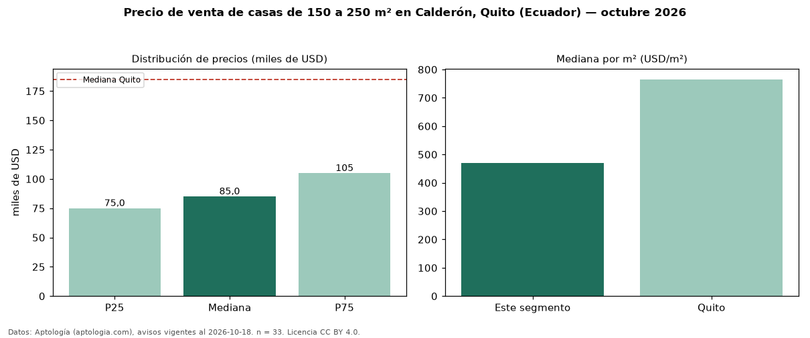

Precio de venta de casas de 150 a 250 m² en Calderón, Quito (Ecuador) — octubre 2026
Con 33 avisos vigentes, el precio mediano de casas de 150 a 250 m² en venta en Calderón, Quito (Ecuador) es USD 85.000. Frente a la mediana de todas las casas en venta de Calderón (USD 78.900, n = 135), queda 8 % por encima; este segmento reúne el 24 % de esos avisos. Por metro cuadrado, la mediana es USD 470/m² (n = 33), 20 % por debajo del conjunto de referencia (USD 590/m²). El área mediana anunciada es 182 m². El segmento con más oferta es el de 3 o más habitaciones (32 avisos, mediana USD 85.000). La mediana de todas las casas en venta de Quito es USD 185.000 (−54 % de diferencia). La mitad central de los avisos va de USD 75.000 a USD 104.900 (razón 1,4), una dispersión baja. Datos: Aptología (aptologia.com), CC BY 4.0 — https://www.aptologia.com/ec/venta/quito/calderon. Archivos: PDF, CSV con las cifras y gráfica PNG.

| Avisos únicos | 33 |
|---|---|
| Percentil 25 | COP 75.000 |
| Mediana | COP 85.000 |
| Percentil 75 | COP 104.900 |
| Mediana por m² | COP 469 |
Fuente: avisos vigentes de portales inmobiliarios recopilados por Aptología, deduplicados (mínimo 30 avisos únicos por celda). Precios pedidos, no cerrados. Fecha: 2026-10-18.